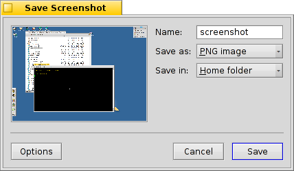
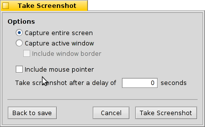

English
English Français
Français Deutsch
Deutsch Italiano
Italiano Русский
Русский Español
Español Svensk
Svensk 日本語
日本語 Українська
Українська 中文 ［中文］
中文 ［中文］ Português
Português Screenshot
Screenshot
| Deskbar: | ||
| Location: | /boot/system/apps/Screenshot | |
| Settings: | ~/config/settings/screenshot |
Besides normal screenshots taken via PRINT, which puts a PNG of the current screen into /boot/home/, this application provides some useful options.

Starting Screenshot will take a screenshot as usual, but offers from its main window controls to set filename, format and folder before saving the image.
The dialog has a few more settings:

Besides the obvious, toggle between taking the whole screen or just the active window, including the window border and the mouse pointer, you can enter a delay before a screenshot is taken. Of course, this delay takes only effect if you take a new shot by pressing .
 Taking a screenshot from Terminal
Taking a screenshot from Terminal
The Screenshot application is also usable from Terminal or a script.
Screenshot --help shows the familiar options as parameters:
~> Screenshot --help
Screenshot [OPTION]... Creates a bitmap of the current screen
OPTION
-o, --options Show options window first
-m, --mouse-pointer Include the mouse pointer
-b, --border Include the window border
-w, --window Capture the active window instead of the entire screen
-d, --delay=seconds Take screenshot after specified delay [in seconds]
-s, --silent Saves the screenshot without showing the app window
overrides --options, saves to home folder as png
Note: OPTION -b, --border takes only effect when used with -w, --window